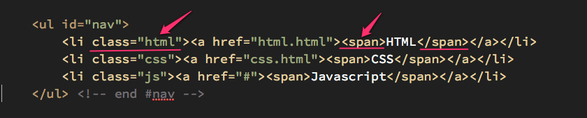
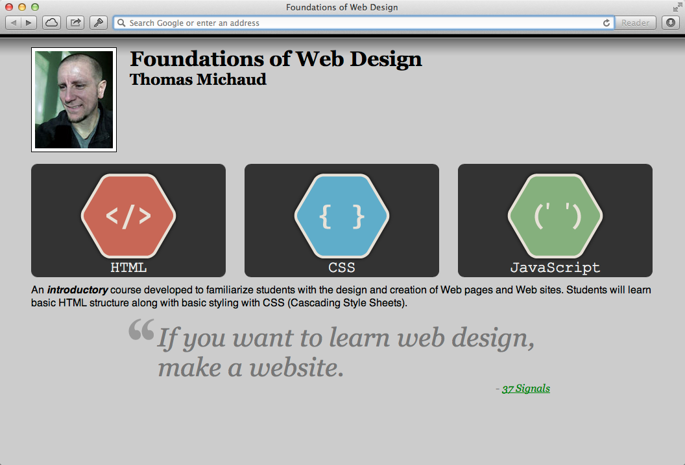

To use what you've learned in this module and previous modules to modify your layout using the following properties: float, position, and display.
For this assignment, we're going to focus only on our front page (index.html) and our a CSS document that will be only for our index.html document
<link> element immediately after the previous <link> element (for your css/site.css document) -- the value for the new <link> href should be css/homepage.css<body> tag, add the following attribute & value: id="homepage"li elements for the ul element (see image)

Notice the additions of the class attribute and span elements for each item.
That's it for the index.html document, let's move onto creating your CSS document.
Next, we have a number of new rules we need to enter. Make sure you go through each step very carefully:
#) selector with the value headerheight to 160px;img selectorfloat to the left;margin-right set to 20px;ul with the ID selector with the value navpadding (all sides) to 0;background-color to transparent ... (this overwrites our rule in site.css for the background color of our unordered list).#nav selector with the descendant li selectordisplay to inline-block;position to relative;vertical-align to bottom;margin-right to 25px;#nav selector with the descendant li with the pseudo-class selector :last-childmargin-right to 0px;li selector with the descendant a selectordisplay to block;width to 300px;height to 175px;padding-top to 20px;text-decoration to none;border-radius to 10px;a selector with the descendant span selectorfont-family to "Courier New", monospace;font-size to 1.5em;position to absolute;bottom to 5px;width to inherit;text-align to center;li a:link, li a:visited, and li a:active to have a background-color of #333; also set the color to #eee;li a:hover to have a background-color with a value of #aaa;For the final step, I'm going to help you set up the first rule, but you have to to the last two on your own. Check the screenshot below to see if you got what I have!
li selector with the class (.) selector that has a value html and the descendant selector of abackground-image to find the icon-html.png in the images folderbackground-repeat to no-repeat;background-position to center 50%Click on image to view a larger image.
